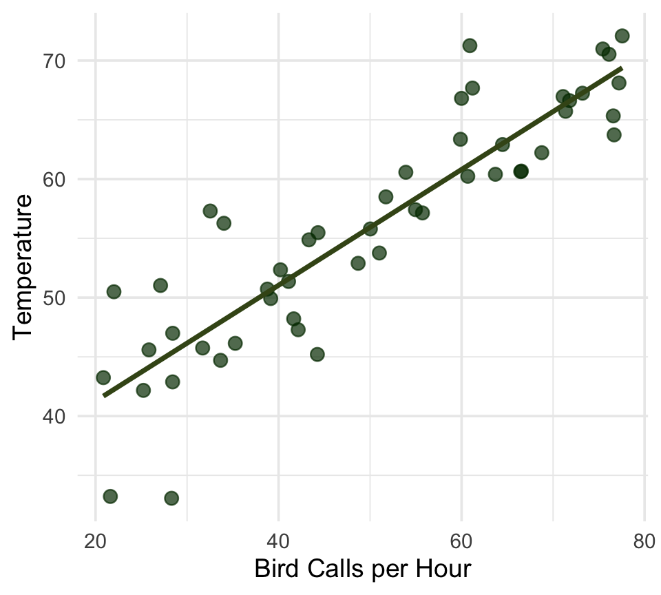
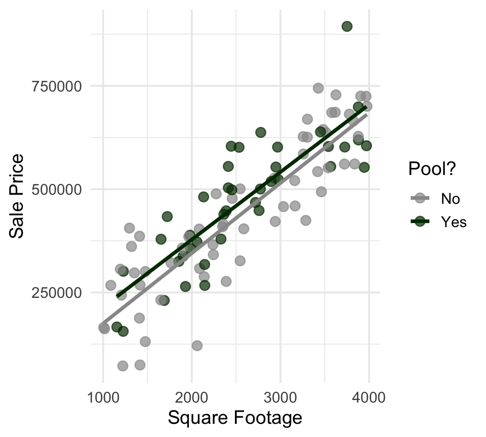
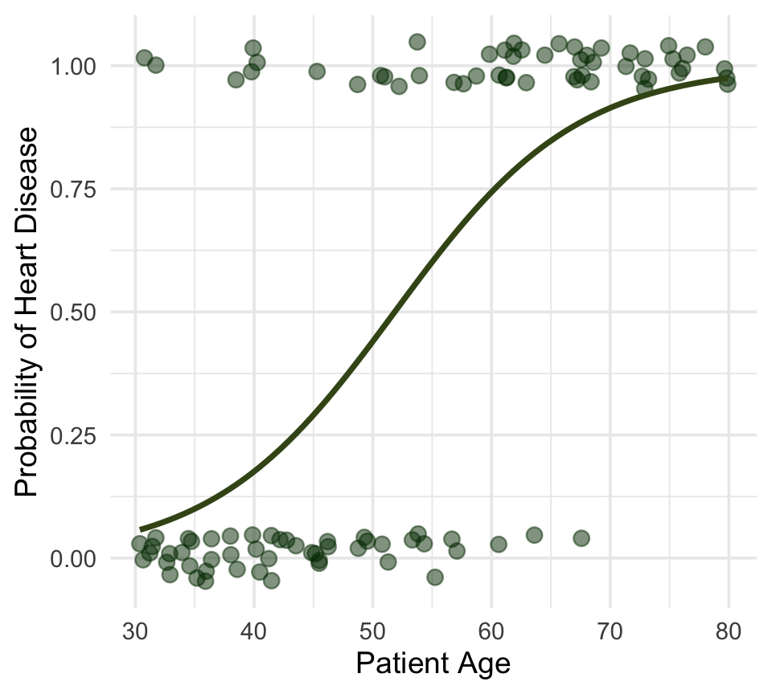
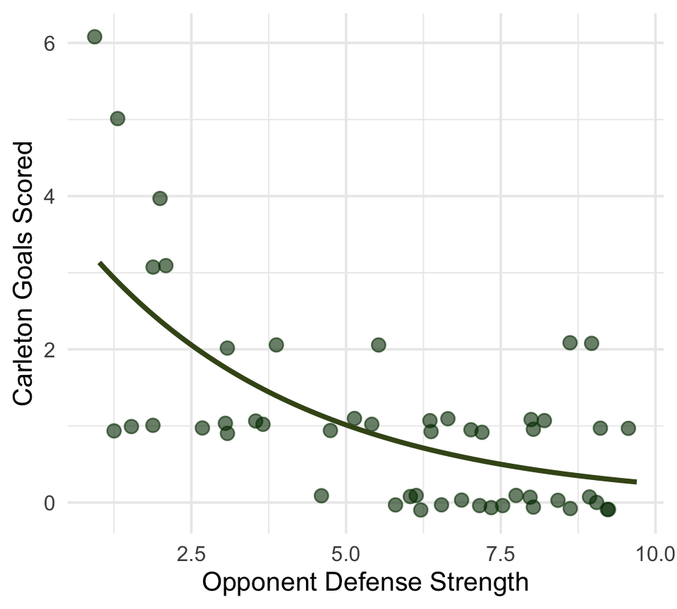
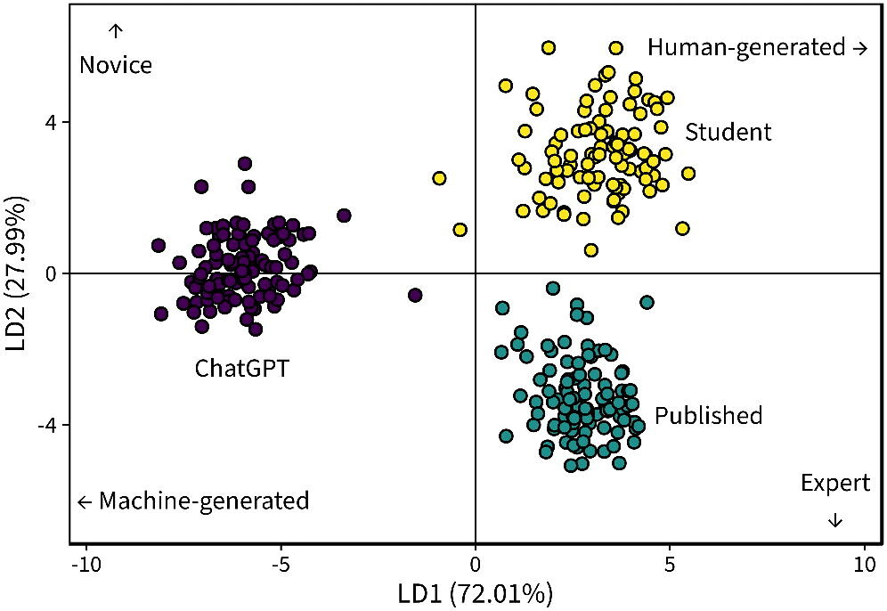

08:00
Day 01
Carleton College
Stat 230 - Spring 2026
08:00
Does the number of bird calls heard in an hour accurately predict the outside temperature?
How much does sale price of a house change based on whether it has a swimming pool, after controlling for square footage and age?
Based on a patient’s age, resting blood pressure, and cholesterol levels, what is the probability they will develop heart disease in the next decade?
How many goals will the Carleton women’s soccer team score depending on the strength of their opponent’s defense?




15:00
Read the full syllabus by next class
| Day | Time | Type | Location |
|---|---|---|---|
| Monday | 3-4pm | Drop-in | CMC 307 |
| Tuesday | 2-3pm | Drop-in | CMC 307 |
| Wednesday | 9:30-10:30 (stat120) | Drop-in | CMC 307 |
| Friday | 10-11 (stat230) | Drop-in | CMC 223 |
Graded work:
Ungraded work:
Before class:
In class:
After class:
You have 4 tokens that you can use throughout the term. Tokens can be redeemed for:
I may also ask you to use a token for other as-needed arrangements throughout the term. Some examples:
I will track balances in the moodle gradebook (updated weekly, typically Fridays)
You are expected to follow Carleton’s policies regarding academic integrity. I encourage you to discuss the homework problems with other humans and do background reading as needed. You should code and write up your solutions on your own. Exams must be done by yourself without communicating with others; all work must be your own. You should collaborate with your teammates on projects, and should use external resources for background research and debugging, but all work should be original and all sources should be properly cited. The use of textbook solution manuals (physical or online), course materials from other students, or materials from previous versions of this course are not allowed.
Large-language models (e.g. ChatGPT, Gemini, etc.) should only be used for coding or debugging help after you’ve attempted to solve the problem on your own, and you should never type homework problems directly into a prompt. Copying, paraphrasing, summarizing, or submitting work generated by anyone but yourself without proper attribution is considered academic dishonesty (this includes output from LLMs).
I also have a few rules in place to protect my intellectual property. You may not record my lectures using tools such as Otter.ai or upload any video or audio recordings to generate transcripts or study notes. You may not upload my course materials (slides, assignment prompts, note sets, etc.) into AI tools or homework help sites.
“AI” tools are new for all of us and it’s OK to have questions about what is and isn’t appropriate. Please ask if you are unsure of whether or not your actions are complying with the assignment/quiz/project instructions. Always default to acknowledging any help received. Cases of suspected academic dishonesty are handled by the Provost’s Office and I am obligated to report any suspected violations of this policy.
❌ AI tools for writing code: You may not use generative AI to take a “first pass” at a coding task. Do not type coursework prompts directly into AI tools.
✅ AI tools for debugging code: You may make use of the technology to get help with error messages or trying to fix issues. Rule of thumb: never type code into or out of an AI interface
❌ AI tools for narrative: Unless instructed otherwise, you may not use generative AI to write narrative on assignments.
❌ AI tools for brainstorming: Your brain is infinitely more capable than ChatGPT and your ideas are more interesting.
❌ AI tools for editing: AI has a distinct writing style that I do not care for, especially when it comes to statistical writing. If your reports have an AI-generated flavor, you will not earn a good grade, even if you wrote it yourself
✅ AI tools for background reading: AI companies have stolen teaching material from some of the best educators in the world! If you don’t understand something from class and the homework, first try reading the textbook. If you still don’t understand, you can ask AI to explain the concept (not a specific problem) in more detail. It won’t always be right; always default to the textbook or course material if you encounter conflicting explanations.
